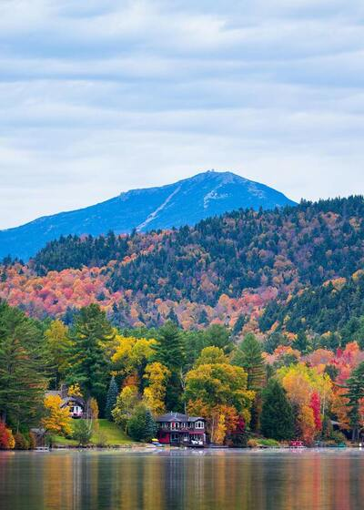

Adirondack Mountains
Perfect for nature lovers, the Adirondacks offer breathtaking views, hiking, and camping opportunities. Don't miss a chance to explore these magnificent mountains.
Discover the hidden gems of the Finger Lakes, Adirondacks, and beyond!
Explore the stunning Finger Lakes region, known for its beautiful lakes, wineries, and scenic hiking trails. Whether you're looking to relax by the water or enjoy outdoor activities, the Finger Lakes has something for everyone.
Perfect for nature lovers, the Adirondacks offer breathtaking views, hiking, and camping opportunities. Don't miss a chance to explore these magnificent mountains.

A vibrant city with a rich history, Syracuse is home to museums, parks, and the renowned Syracuse University. Be sure to visit the city's downtown for great food and entertainment.
One of the most famous natural wonders in the world, Niagara Falls is a must-see. Whether you view it from a boat tour or one of the observation decks, the falls are a breathtaking sight.

The banks of the blue water of Seneca Lake create a relaxing experience for swimmers and picnickers.
Ithaca is famous for its many waterfalls, more than 100 within 10 miles of downtown. If you put them all together, it's a waterfall 7,342 feet tall. That's 1.39 miles of falling water!